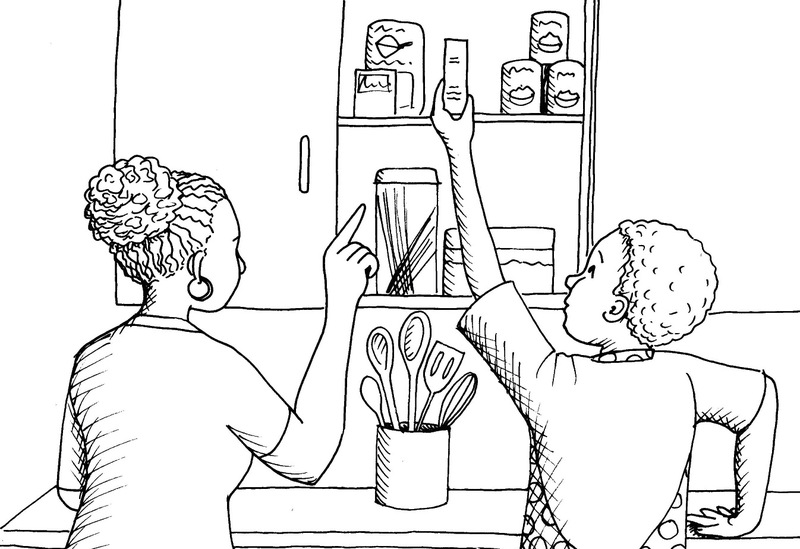

Maak en evalueer noodtoestand maaltye
In die vorige hoofstuk het jy die tipes voedsel, wat vlugtelinge nodig het om gesond te bly terwyl hulle in ’n noodtoestand is, ondersoek. Jy het oor voeding geleer en oor die voedselgroepe wat in elke maaltyd teenwoordig moet wees. Jy het ook ’n ontwerpopdrag geskryf om ’n vlugtelingekamp van 100 mense te voed. In hierdie hoofstuk gaan jy oor die volgende leer en doen:

Figuur 1

Figuur 2: Bestanddele vir ’n maaltyd wat gesond is en maklik voorberei kan word.
Metode om ’n gedeelte van die maaltyd voor te berei
Kies een item van die voedsel van jou noodtoestand maaltyd. Onthou dat dit:
- voedsaam,
- maklik verkrygbaar,
- maklik om te kook, en
- smaaklik moet wees.
Voor jy die maaltyd voorberei, skryf eers die stappe neer wat jy moet volg om die maaltyd te maak. Skryf die stappe in die korrekte volgorde neer, van die begin tot die einde. Dink versigtig na oor wat jy eerste moet doen, en dan ook wat jy volgende moet doen. Om die stappe op hierdie manier te lys, beteken dat jy die stappe in volgorde neerskryf. Skryf die stappe onder mekaar in ’n tabel neer.
Maar doen eers die volgende: skryf neer hoe of hoekom jy elke stap gaan volg. Hoe jy ’n stap gaan volg, word ’n instruksie genoem. Hoekom jy ’n stap gaan volg word ’n rede genoem. Skryf die instruksie, of rede vir elke stap, langs daardie stap neer. Kyk na die skets hieronder om te sien wat Linda gedoen het.

Figuur 3: Trek ’n tabel op wat wys wat jy moet doen om voedsel van die begin tot die einde te maak. Skryf hoe of hoekom jy elke stap volg in die tweede kolom langs elke stap.
Jy moet deeglik beplan, en dan jou plan uiteensit deur die volgende riglyne te volg:
- Dui aan of die voedsel wat jy gaan kook vir ontbyt, middagete of aandete is. Verduidelik hoekom jy besluit het om die voedsel vir die spesifieke maaltyd te kook. Hier is ’n voorbeeld wat wys hoe die antwoord in die tabel ingevul moet word:
Voorbeeld
|
Ontbyt |
Dit is die belangrikste maaltyd van die dag en sal aan die vlugtelinge die energie gee wat hulle nodig het. |
- Watter item van die voedsel het jy gekies? Verduidelik hoekom. Bestaan dit meestal uit koolhidrate of proteïne? Kyk weer na die voedselgroepe waarvan jy in hoofstuk 7 geleer het.
Voorbeeld
|
Stampmielies |
Dit is hoog in koolhidrate, vir baie energie. |
- Bepaal hoeveel van elke bestanddeel jy gaan nodig hê om die item van die voedsel vir een volwassene te maak. Om dit te doen, kyk weer na jou ontwerpopdrag in hoofstuk 7.
Voorbeeld
|
Stampmielies |
300 gram |
- Skryf neer hoe jy hierdie item van die voedsel gaan voorberei. Skryf elke stap van die proses neer.
Voorbeeld
|
Meet |
Weeg 300 gram stampmielies uit. Meet 1 liter water uit. |
- Hoe gaan jy die voedsel kook? Onthou, vir hierdie aktiwiteit gaan jy die proses neerskryf wat jy by die huis sal doen, nie hoe jy dit by ’n vlugtelingekamp sal doen nie.
Voorbeeld
|
Kies ’n pot |
Kies ’n pot wat geskik sal wees vir die kook van die voedsel. |
|
Meng die bestanddele |
Plaas die stampmielies, water en sout in die pot. |
- Hoe lank dink jy sal die voorbereiding en die kookproses neem? Deel dit op in stappe. Voeg al die stappe se tye bymekaar en skryf dan die totale tyd onder neer.
Voorbeeld
|
Meet bestanddele |
5 minute |
|
Meng bestanddele |
2 minute |
|
Kook bestanddele |
30 minute |
|
Totale tyd |
37 minutes |
- Vra ’n volwassene by die huis om jou te help. Skryf in jou plan neer wie hierdie persoon gaan wees.

Figuur 4: Vra ’n volwassene om jou met die bestanddele en die kookproses te help.
Sodra jou plan voltooi is, neem dit skool toe. Bespreek jou plan met ’n ander leerder. Hierdie is ’n belangrike deel van die beplanning voor jy jou maaltyd kook. Indien enige een van julle twee ’n belangrike stap uitgelaat het, sal julle die plan moet herskryf. Onthou, die stappe in jou plan is jou riglyn om die voedsel te kook.
Berei die maaltyd voor
In hierdie les gaan jy jou plan volg en die item van voedsel by die huis voorberei. Dit sal slegs genoeg wees vir een persoon, en nie vir ’n 100 mense nie! Jy sal dan die voedsel skool te bring en die klas sal dit evalueer.
Jy moet hierdie deel van die aktiwiteit by die huis doen.
- Kry al die bestanddele voor jy begin.
- Lees deur die plan wat jy geskryf het om jou te help. Volg die stappe noukeurig.
-
Indien jy een van die stappe verander, skryf neer
hoe jy dit verander het. Skryf ook neer waarom jy
dit verander het. Jy gaan hierdie inligting gebruik
wanneer jy jou maak volgorde evalueer.
Baie belangrik!
Jy moet toestemming van ’n volwassene kry wanneer jy gereedskap by die huis gebruik vir die kook van die voedsel en ook vir die gebruik van die bestanddele.
Vra ’n volwassene om jou te help kook.

Figuur 5: Vra ’n volwassene om jou te help met die bestanddele en ook met die kookproses.
Skryf enige veranderinge wat jy aan die metode of die bestanddele gemaak het hier neer:
Nadat jy die maaltyd gekook het, proe jou maaltyd om seker te maak dat dit lekker smaak. Dit beteken dat jy die smaaklikheid van die maaltyd evalueer. Indien jy die maaltyd vir die korrekte tydsduur gekook het, behoort dit maklik te wees om te kou en te sluk. Dit beteken dat jy die tekstuur van die maaltyd evalueer. Jy gaan die maaltyd aanbied vir evaluering, so dit moet heerlik smaak en ook gesond wees. ’n Gesonde maaltyd sal die korrekte voedingswaarde hê. Jy het oor voeding geleer in hoofstuk 7.
Veiligheidswaarskuwing
Indien jy ’n oop vuur gebruik om op te kook, moet jy onthou dat vure gevaarlik is.
Maak altyd seker dat daar veiligheidsmaatreëls in plek is.
Beskryf jou evaluering van die maaltyd:
Stoor die maaltyd in ’n plastiekhouer wat geseël kan word om lug uit te hou. Indien jy nie ’n spesiale houer het nie, gebruik ’n leë margarienhouer.
Plaas die houer oornag in die yskas. Bring jou item voedsel die volgende dag skool toe vir evaluasie.
Evalueer die maaltyd
Bring jou voorbereide maaltyd na die skool vir evaluering. Verdeel in groepe van vier. Gebruik plastiek lepels om mekaar se maaltye te proe.
Higiëne waarskuwing
Bring jou eie lepel na die skool. Indien jy ’n lepel deel, was dit met seep en water voordat jy dit gebruik.
Nadat jy die maaltye van die ander leerders geproe het, skryf ’n evaluasie van hulle maaltye, en ook van jou eie maaltyd, neer.
Evalueer elke maaltyditem. Gebruik die kontrolelys hieronder. Merk “ja” of “nee” by elke vraag.
|
Ja |
Nee |
|
|
Smaak: Is die maaltyd smaaklik? |
||
|
Tekstuur: Is die maaltyd vir die regte tydsduur gekook? |
||
|
Voedingswaarde: Is die maaltyd gesond? |
||
|
Kommentaar: |
Sodra julle almal mekaar se maaltye geproe het en julle kommentaar gelys het, gee aan mekaar terugvoer. Moenie ongeskik wees teenoor ander leerders se maaltye nie. Maak positiewe voorstelle. Sê hoe jy dink hulle die smaak, tekstuur en voedingswaarde van hulle maaltye kan verbeter.
Skryf nou ’n evaluasie van jou eie maaltyd neer, volgens die terugvoer wat jy ontvang het. Skryf jou evaluasie in paragraaf vorm.
Byvoorbeeld:
Ek het hierdie taak baie interessant gevind. Dit was aanvanklik baie moeilik om uit te werk hoe om seker te wees dat daar genoeg proteïne en koolhidrate sal wees, dus ek het die voedselgroepe gebruik om my te lei. Ek het stampmielies gekies omdat dit ’n baie voedsame graansoort is; dit is goedkoop en maklik om te vind. Ek het die kooktye van die stampmielies nagegaan om seker te maak dat dit ordentlik gekook is en dat die tekstuur reg is. Ek het sout en botter by die stampmielies gevoeg om te verseker dat dit smaaklik is.
Skryf nou ’n tweede paragraaf oor alles wat jy in hierdie hoofstuk geleer het. Aan die einde van die paragraaf, skryf hoe jy volgende keer dinge anders sal doen.
Byvoorbeeld:
In hierdie hoofstuk het ek oor beplanning geleer. Ek het ook geleer hoe om ’n maaltyd te beplan en te kook. Indien ek hierdie les sou oor doen, sou ek spinasie by die stampmielies gevoeg het omdat spinasie vitamines het wat nie in stampmielies te kry is nie. Spinasie sou die maaltyd baie meer voedingswaarde gegee het.
Volgende week
In die volgende les gaan jy materiale ondersoek wat gebruik kan word in reddingsoperasies. Kies twee nooddienste wat die gemeenskap dien, byvoorbeeld brandweerdienste en die Nasionale See-Reddings Instituut.